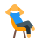

Como te descreves neste momento?
Seleciona tudo o que se aplica. Não há respostas certas ou erradas.
Penso demasiado
A mente não para
Sinto-me ansioso/a
Tensão e preocupação
Falta-me foco
Dificuldade em concentrar-me
Durmo mal
Mente ativa à noite
Quero relaxar mais
Tensão no corpo
Preocupo-me muito
Com o futuro e o passado
Com que frequência tens estes momentos?
Sê honesto/a — só assim te podemos ajudar melhor.

O que queres trabalhar primeiro?
Escolhe um. Podes sempre mudar mais tarde.
Ansiedade & Overthinking
Acalmar a mente e reduzir preocupações
Foco & Clareza
Concentrar e organizar os pensamentos
Relaxamento & Sono
Descansar e recuperar energia
Quando preferes praticar?
Vamos adaptar as sugestões ao teu dia.
Manhã
Começar o dia com calma
Tarde
Pausa a meio do dia
Noite
Desligar antes de dormir
5 minutos
Sessões muito rápidas
10 minutos
Ritmo equilibrado
20 minutos
Prática mais profunda
30+ minutos
Sessões completas
Situações do dia a dia
Escolhe a opção que mais se identifica contigo em cada situação.
Quando tens uma decisão para tomar, costumas...
Quando te deitas para dormir, o que acontece mais frequentemente?
Num dia de trabalho ou estudo, costumas...
Corpo e emoções
Mais algumas perguntas para afinar o teu perfil.
Quando estás stressado/a, o que sentes primeiro?
Como reages quando algo não corre como esperavas?
Nos últimos 30 dias, com que frequência te sentiste sobrecarregado/a?
Mente Agitada
O teu perfil dominante é o overthinking. A tua mente tende a trabalhar em excesso, revisitando situações e antecipando problemas. O MindNest vai ajudar-te a criar pausas mentais e a ganhar distância dos pensamentos.